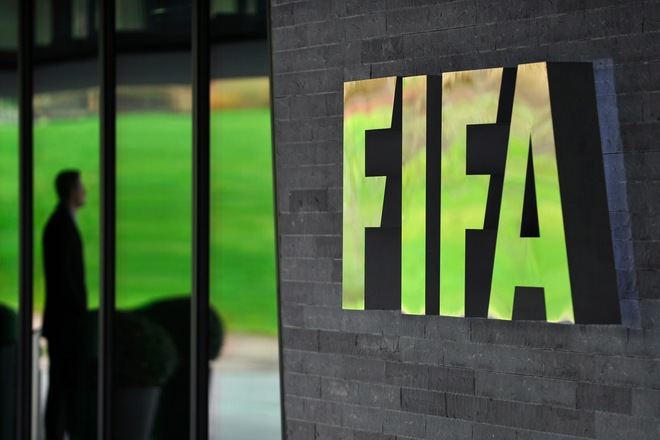

The Federation Internationale de Football Association (FIFA -> French for: 'International Federation of Association Football', Spanish: Federación Internacional de Futbol Asociacion, German: International Verband des Association Football) is an organization which describes itself as an international governing body of association football, futsal, beach soccer, and efootball. FIFA is responsible for the organization of football's major international tournaments, notably the World Cup which commenced in 1930 and the Women's World Cup which commenced in 1991. FIFA was founded in 1904 to oversee international competition among the national associations of Belgium, Denmark, France, Germany, the Netherlands, Spain, Sweden, and Switzerland. Headquartered in Zurich, its membership now comprises 211 national associations. Member countries must each also be members of one of the six regional confederations into which the world is divided: Africa, Asia, Europe, North & Central America and the Caribbean, Oceania, and South America. Although FIFA does not control the rules of football, that being the responsibility of the International Football Association Board, it is responsible for both the organization of a number of tournaments and their promotion, which generate revenue from sponsorship. In 2017, FIFA had revenues of over US $734 million, for a net loss of $189 million, and had cash reserves of over US$930 million.
The need for a single body to oversee association football became apparent at the beginning of the 20th century with the increasing popularity of international fixtures. The Fédération Internationale de Football Association (FIFA) was founded in the rear of the headquarters of the Union des Societes Francaises de Sports Athletiques (USFSA) at the Rue Saint Honore 229 in Paris on 21 May 1904. The French name and acronym are used even outside French-speaking countries. The founding members were the national associations of Belgium, Denmark, France, the Netherlands, Spain (represented by the then-Madrid Football Club; the Royal Spanish Football Federation was not created until 1913), Sweden and Switzerland. Also, that same day, the German Football Association (DFB) declared its intention of affiliating through a telegram. The first president of FIFA was Robert Guerin. Guérin was replaced in 1906 by Daniel Burley Woolfall from England, by then a member of the association. The first tournament FIFA staged, the association football competition for the 1908 Olympics in London was more successful than its Olympic predecessors, despite the presence of professional footballers, contrary to the founding principles of FIFA.[dubious – discuss] Membership of FIFA expanded beyond Europe with the application of South Africa in 1909, Argentina in 1912, Canada and Chile in 1913, and the United States in 1914. During World War II, with many players sent off to war and the possibility of travel for international fixtures severely limited, the organization's survival was in doubt. Post-war, following the death of Woolfall, the organisation was run by Dutchman Carl Hirschmann. It was saved from extinction but at the cost of the withdrawal of the Home Nations (of the United Kingdom), who cited an unwillingness to participate in international competitions with their recent World War enemies. The Home Nations later resumed their membership. The FIFA collection is held by the National Football Museum at Urbis in Manchester, England. The first World Cup was held in 1930 in Montevideo, Uruguay.